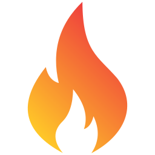

Form
menu
Queimadas
são atividades que consistem em incendiar terrenos, com o objetivo de limpar o solo para a prática de agricultura ou pecuária. Elas podem ser naturais ou antrópicas, ou seja, causadas pelo meio ambiente ou por seres humanos.
Causa Das queimadas